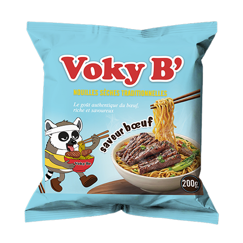
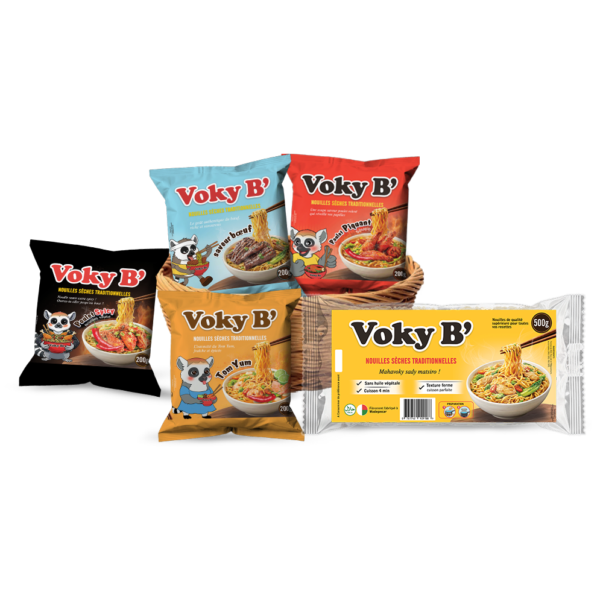
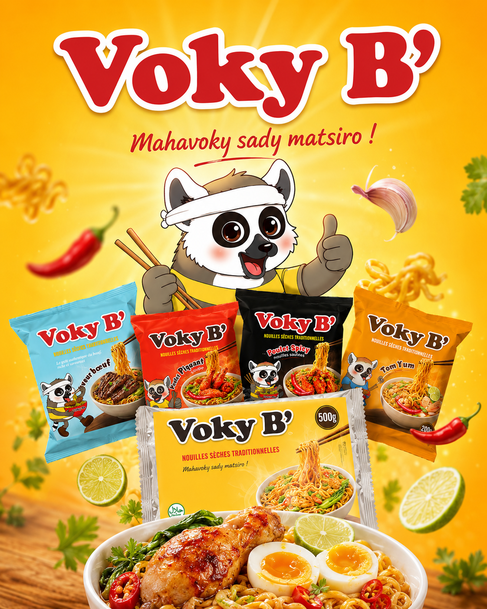

Saveur boeuf
Le goût authentique du boeuf
Une base savoureuse, ronde et réconfortante pour les bols du quotidien.
Demander la distributionFièrement fabriqué à Madagascar
Des nouilles instantanées généreuses, prêtes en 4 minutes, avec le goût chaud et familial qui remplit vraiment l'assiette.


Une gamme visuelle et gourmande qui passe du bol quotidien au plat relevé, avec des couleurs franches et des packshots qui claquent.

Saveur boeuf
Une base savoureuse, ronde et réconfortante pour les bols du quotidien.
Demander la distributionDu paquet au bol
VokyB met le produit au centre : des nouilles souples, un assaisonnement expressif et assez de place dans le bol pour ajouter herbes, légumes, oeuf, viande ou piment selon l'envie.
Trois directions simples pour transformer un paquet VokyB en assiette chaude, vive et partageable.
Tomates, pak choi, oignons verts, coriandre et citron vert.
Poulet grillé, oeuf mollet, herbes fraîches et bouillon bien chaud.
Piment rouge, gingembre, légumes croquants et saveur piquante.
Pour boutiques, snacks et familles
Une landing page prête pour présenter la gamme, capter des demandes commerciales et donner faim dès la première seconde.